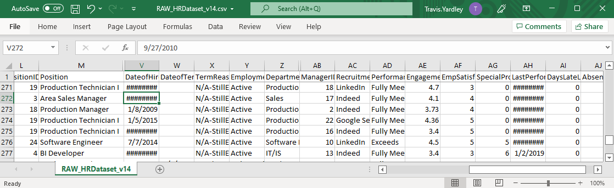
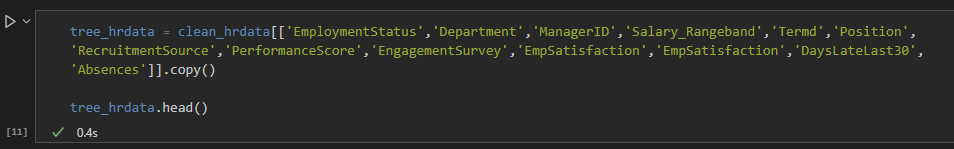
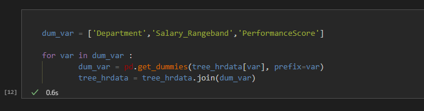
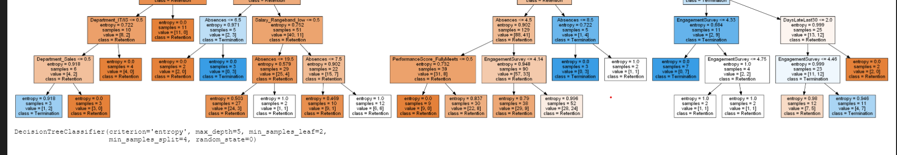
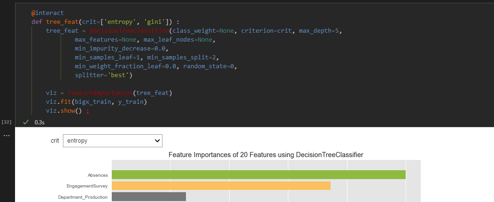
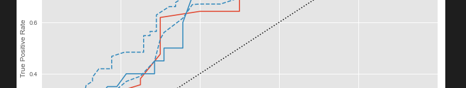

After over a decade of leading in professional kitchens I am taking my knowledge and experience of fast paced, high intensity situations
and leveraging them into a new career that moves beyond sustainable and responsible hospitality. My passion is centered around the challenges
of agriculture and agricultural technology - my focus is on how those pieces intersect with business intelligence and using data driven
decision making to drive progress and innovation. Applying analytical techniques and critical thinking to facilitate real change and impact
through insightful observation and data storytelling is exactly what I've been working towards and where I aim to be.
Projects
Highlighting my forcus on business intelligence, data analysis and machine learning projects that helps leaders make informed, data-driven decisions in a timely manner.
Our young Scottish Fold was having serious troubles and was going to need surgery
to remove an abnormally large stone from her bladder. One very long day and drugged up kitty later, Ailie was home safe and sound.
We were happy to know she would be ok, but how could we stop this from happening again?
And just like that, we needed to take a very serious look at our cats' diets. Once we determined our nutritional requirements, we assumed
it would be as simple as looking at some nutritional info on the sides of cans and picking the right numbers. The pet nutrition industry, however,
is not set up with an informed consumer in mind...
This is a multi-program, functioning data pipeline for evaluating... cat food. Yeah. I know, it seems weird; but as it turns out this data set actually presents
a number of interesting challenges: non-standardized itemization, differing or mixed systems of measurment, unlisted values that we'll need to derive. What started off as
an afternoon on Excel quickly escalated, as the more I looked into this the more holes I uncovered. This was quickly becoming the biggest project I had even tackled.
At the heart of this project are three key programs: spidercat, tidycat, and vizcat.
Machine Learning
Below are a selection of projects that highlight my use of machine learning techniques.
Being able to rely on your team is critical to success in any environment and even the most humble role can become the bottleneck that halts production,
damaging morale and causing unforseen difficulties. Onboarding new additions to the team and adjusting to new workflows takes time and resources: wouldn't it
be great to see these roadblocks coming and be able to plan for them? No where is this more evident than in the dish pit of any commercial kitchen.
Which is exactly the demonstration I was hoping for; however, my first hurdle was in hindsight an obvious one: most small scale restaurants (and I would
suspect, most small businesses) do not document even a fraction of the data they generate. In my case, the data I wanted to showcase simply wasn't available.
The obvious candidates - larger, corperate restaurant chains - doubtless conduct this style of analysis. And why wouldn't they? Any insights into knowing the
frequency of employee turn over will directly impact your hiring and retension strategies, contributing to minimzing labour costs and mitigating shortages
In this project, I've used Python and scikit-learn to conduct employee turnover analysis to assess the churn within an organization, in an effort to predict and
reduce future employee turnover. Wages, incentives, workload, satisfaction and absenteeism - by modeling these variable interactions using Decision Trees and Random Forest, we can identify
the key variables that play a crucial role in retaining team members. By leveraging Jupyter widgets to build interactive graphical controls, the hyperparameters
of the feature importance plots can be modified on the fly; the results are generated in real time, and you gain immediate insights into the when and why.
For now, the data set I am using is the Human Resources Data Set by Dr. Rich Huebner, as hosted on Kaggle.
Not only does this data set offer a lot of metrics we might find in larger enterprise scale business. Plus, as a training resource it also offered me an opportunity to
clean the data set myself!

In addition to the usual cleaning tasks, the data set included a number of features that weren't relevent to our analysis. We reformatted our DataFrame, dropping and reformatting the values for our algorithm.

The next step was an exploratory analysis to see exactly what we were dealing with. By uncovering simple relationshsips now, it will help us betterinterpret our model's findings.
Once I felt confident that I had a good handle on the data, I generated my training and validation sets. Both models in this project feature
interactive widgets for live tuning both the tree outputs and their accompanying Feature Importance charts.

Lastly, I wanted to show some metrics for evaluating the models. I did this through a simple ROC visualization that outputs the AUC value to quickly compare iterations.

If you've gotten all the way down here, I'd like to thank you for your time! I hope this project serves as a good example of how we can quickly impliment machine learning techniques
to arrive at data-driven insights into the why of employee behavior, and how those insights can be used not only to forecast outcomes but also act as early warnings and increase
the overall retention of staff within an organization.
If you're still curious about what I do, why not explore some of my other projects?
Resume
Cleaning, validating and interpreting data sets.
Employing design thinking to generate data visualizations and presentations that communicate actionable insights.
Forecasting with inferential statistics, including regression analysis.
Generating and navigating data structures for use in analysis.
Using effective questioning and root cause analysis to deliver business value and overcome roadblocks.
Developing and maintaining project artifacts for internal and stakeholder use.
Organization
Things.
>
Communication
Problem Solving
Time Management
Collaboration & Teamwork
Education
University of the Fraser Valley // Bachelor of Applied Science (ETP)
UFV's Engineering Transfer Program is a 1 year condensed curriculum designed for academically strong students pursuing
a degree in Engineering with a strong focus on maths, physics, and technical reporting.
Google // Professional Data Analytics Certificate
Defining business problems through effective questions; data cleaning and verification best practices;
organizing and formatting data for exploration; effective visualization and presentation of findings to stakeholders.
Google // Professional Project Management Certificate
Communication and stakeholder management; conflict resolution; creation and maintenance of project artifacts,
Gantt and RACI charts; design thinking best practices; Agile methodologies with a focus on Scrum.